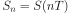
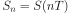
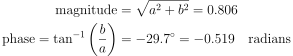

3. échantillonnage IQ¶
Dans ce chapitre, nous présentons un concept appelé échantillonnage IQ, ou échantillonnage complexe ou échantillonnage en quadrature. Nous abordons également l’échantillonnage de Nyquist, les nombres complexes, les porteuses RF, les fréquences intermédiaires, et la densité spectrale de puissance. L’échantillonnage IQ est la forme d’échantillonnage utilisée par la radio logicielle, ainsi que par de nombreux récepteurs (et émetteurs) numériques. Il s’agit d’une version légèrement plus complexe de l’échantillonnage numérique ordinaire (jeu de mots), nous allons donc y aller doucement et, avec un peu de pratique, le concept va certainement faire tilt!
Les bases de l’échantillonnage¶
Avant d’aborder l’échantillonnage QI, voyons d’abord ce que signifie l’échantillonnage. Vous avez peut-être déjà rencontré l’échantillonnage sans vous en rendre compte en enregistrant des données audio avec un microphone. Le microphone est un transducteur qui convertit les ondes sonores en un signal électrique (un niveau de tension). Ce signal électrique est transformé par un convertisseur analogique-numérique (CAN), produisant une représentation numérique de l’onde sonore. Pour simplifier, le microphone capte les ondes sonores qui sont converties en électricité, et cette électricité est à son tour convertie en nombres. Le CAN fait le lien entre les domaines analogique et numérique. Les SDR sont étonnamment similaires. Au lieu d’un microphone, ils utilisent une antenne, et utilisent également des ADC. Dans les deux cas, le niveau de tension est échantillonné par un CAN. Pour les SDR, il s’agit d’ondes radio en entrée et de nombres en sortie.
Qu’il s’agisse d’audio ou de radiofréquences, nous devons échantillonner si nous voulons capturer, traiter ou enregistrer un signal numériquement. L’échantillonnage peut sembler simple, mais il est très complexe. Une façon plus technique d’envisager l’échantillonnage d’un signal est de saisir des valeurs à des moments précis et de les sauvegarder numériquement. Disons que nous avons une fonction aléatoire,  , qui peut représenter n’importe quoi, et que c’est une fonction continue que nous voulons échantillonner :
, qui peut représenter n’importe quoi, et que c’est une fonction continue que nous voulons échantillonner :

Nous enregistrons la valeur de à intervalles réguliers de  secondes, appelés période d’échantillonnage. La fréquence à laquelle nous échantillonnons, c’est-à-dire le nombre d’échantillons prélevés par seconde, est simplement
secondes, appelés période d’échantillonnage. La fréquence à laquelle nous échantillonnons, c’est-à-dire le nombre d’échantillons prélevés par seconde, est simplement  . Nous l’appelons le taux d’échantillonnage, et c’est l’inverse de la période d’échantillonnage. Par exemple, si nous avons une fréquence d’échantillonnage de 10 Hz, la période d’échantillonnage est de 0.1 seconde; il y aura 0.1 seconde entre chaque échantillon. Dans la pratique, nos fréquences d’échantillonnage seront de l’ordre de centaines de kHz à des dizaines de MHz, voire plus. Lorsque nous échantillonnons des signaux, nous devons être attentifs à la fréquence d’échantillonnage, c’est un paramètre très important.
. Nous l’appelons le taux d’échantillonnage, et c’est l’inverse de la période d’échantillonnage. Par exemple, si nous avons une fréquence d’échantillonnage de 10 Hz, la période d’échantillonnage est de 0.1 seconde; il y aura 0.1 seconde entre chaque échantillon. Dans la pratique, nos fréquences d’échantillonnage seront de l’ordre de centaines de kHz à des dizaines de MHz, voire plus. Lorsque nous échantillonnons des signaux, nous devons être attentifs à la fréquence d’échantillonnage, c’est un paramètre très important.
Pour ceux qui préfèrent les mathématiques, soit  l’échantillon
l’échantillon  , généralement un nombre entier commençant à 0. En utilisant cette convention, le processus d’échantillonnage peut être représenté mathématiquement comme  pour des valeurs entières de . C’est-à-dire que nous évaluons le signal analogique à ces intervalles de
, généralement un nombre entier commençant à 0. En utilisant cette convention, le processus d’échantillonnage peut être représenté mathématiquement comme  pour des valeurs entières de . C’est-à-dire que nous évaluons le signal analogique à ces intervalles de  .
.
Echantillonnage de Nyquist¶
Pour un signal donné, la grande question est souvent de savoir à quelle vitesse nous devons échantillonner. Examinons un signal qui est juste une onde sinusoïdale, de fréquence f, représentée en vert ci-dessous. Disons que nous échantillonnons à une fréquence Fs (échantillons représentés en bleu). Si nous échantillonnons ce signal à une fréquence égale à f (c’est-à-dire Fs = f), nous obtiendrons quelque chose qui ressemble à ceci:

La ligne pointillée rouge dans l’image ci-dessus reconstruit une fonction différente (incorrecte) qui aurait pu conduire à l’enregistrement des mêmes échantillons. Elle indique que notre taux d’échantillonnage était trop faible car les mêmes échantillons auraient pu provenir de deux fonctions différentes, entraînant une ambiguïté. Si nous voulons reconstruire avec précision le signal original, nous ne pouvons pas tolérer cette ambiguïté.
Essayons d’échantillonner un peu plus rapidement, à Fs = 1.2f:

Là encore, il existe un signal différent qui pourrait correspondre à ces échantillons. Cette ambiguïté signifie que si quelqu’un nous donnait cette liste d’échantillons, nous ne pourrions pas distinguer quel signal est le signal original sur la base de notre échantillonnage.
Que diriez-vous d’un échantillonnage à Fs = 1.5f:

Toujours pas assez rapide! Selon une partie de la théorie du DSP dans laquelle nous ne nous plongerons pas, vous devez échantillonner à deux fois la fréquence du signal afin de lever l’ambiguïté que nous rencontrons:

Il n’y a pas de signal erroné cette fois-ci, car nous avons échantillonné suffisamment rapidement pour qu’il n’existe aucun signal correspondant à ces échantillons autre que celui que vous voyez (à moins que vous n’alliez plus haut en fréquence, mais nous en discuterons plus tard).
Dans l’exemple ci-dessus, notre signal était une simple onde sinusoïdale. La plupart des signaux réels comportent de nombreuses composantes de fréquence. Pour échantillonner avec précision un signal donné, la fréquence d’échantillonnage doit être “au moins deux fois la fréquence de la composante de fréquence maximale”. Voici une visualisation à l’aide d’un exemple de tracé dans le domaine fréquentiel. Notez qu’il y aura toujours un plancher de bruit et que la fréquence la plus élevée est généralement une approximation:

Nous devons identifier la composante de fréquence la plus élevée, puis la doubler, et nous assurer que nous échantillonnons à cette fréquence ou plus rapidement. La fréquence minimale à laquelle nous pouvons échantillonner est connue sous le nom de taux de Nyquist. En d’autres termes, le taux de Nyquist est le taux minimum auquel un signal (à bande passante finie) doit être échantillonné pour conserver toutes ses informations. Il s’agit d’un élément théorique extrêmement important dans le domaine du DSP et de la SDR, qui sert de pont entre les signaux continus et discrets.

Si l’échantillonnage n’est pas assez rapide, nous obtenons ce que l’on appelle le repliement ou l’alaising, dont nous parlerons plus tard, et que nous essayons d’éviter à tout prix. Ce que font nos SDR (et la plupart des récepteurs en général), c’est filtrer tout ce qui est au-dessus de Fs/2 juste avant l’échantillonnage. Si nous essayons de recevoir un signal avec une fréquence d’échantillonnage trop faible, ce filtre coupera une partie du signal. Nos récepteurs SDR se donnent beaucoup de mal pour nous fournir des échantillons exempts de repliement ainsi que d’autres imperfections.
Échantillonnage en quadrature¶
Le terme “quadrature” a de nombreuses significations, mais dans le contexte du DSP et de la SDR, il désigne deux ondes déphasées de 90 degrés. Pourquoi un déphasage de 90 degrés? Observez que deux ondes qui sont déphasées de 180 degrés sont essentiellement la même onde avec une multipliée par -1. En étant déphasées de 90 degrés, elles deviennent orthogonales, et il y a beaucoup de choses intéressantes à faire avec les fonctions orthogonales. Par souci de simplicité, nous utilisons le sinus et le cosinus comme nos deux ondes sinusoïdales déphasées de 90 degrés.
Ensuite, attribuons des variables pour représenter la amplitude du sinus et du cosinus. Nous utiliserons  pour le cos() et
pour le cos() et  pour le sin():
pour le sin():

Nous pouvons le constater visuellement en traçant I et Q égaux à 1 :

Nous appelons le fonction cos() la composante “en phase”, noté par la lettre I (pour in-phase en anglais), et le sin() la composante “en quadrature”, d’où Q. Toutefois, si vous mélangez accidentellement les deux et attribuez Q au cos() et I au sin(), cela ne fera pas de différence dans la plupart des situations.
L’échantillonnage IQ est plus facile à comprendre en se plaçant du point de vue de l’émetteur, c’est-à-dire en considérant la tâche consistant à transmettre un signal RF dans l’air. Ce que nous faisons, en tant qu’émetteur, c’est additionner la composante sin() et la composante cos(). Disons que x(t) est notre signal à transmettre:

Que se passe-t-il lorsque l’on additionne un sinus et un cosinus? Ou plutôt, que se passe-t-il lorsque nous additionnons deux sinusoïdes déphasées de 90 degrés? Dans l’animation ci-dessous, il y a un curseur pour ajuster I et un autre pour ajuster Q. Ce qui est tracé est le cosinus, le sinus, et ensuite la somme des deux.

(Le code utilisé pour cette application Python pyqtgraph se trouve à l’adresse suivante ici)
Ce qu’il faut retenir, c’est que lorsque nous additionnons le cos() et le sin(), nous obtenons une autre onde sinusoïdale pure avec une phase et une amplitude différentes. De plus, la phase se décale lorsque nous retirons ou ajoutons lentement l’une des deux parties. L’amplitude change également. Tout ceci est le résultat de l’identité trigonométrique :  , sur laquelle nous reviendrons plus tard. “L’utilité” de ce résultat est que nous pouvons contrôler la phase et l’amplitude d’une onde sinusoïdale résultante en ajustant les amplitudes I et Q (nous n’avons pas besoin d’ajuster la phase du cosinus ou du sinus). Par exemple, nous pouvons ajuster I et Q de manière à ce que l’amplitude reste constante et que la phase soit celle que nous voulons. En tant qu’émetteur, cette approche est extrêmement utile car nous savons que nous devons transmettre un signal sinusoïdal pour qu’il se propage dans l’air comme une onde électromagnétique. Et il est beaucoup plus facile de régler deux amplitudes et d’effectuer une opération d’addition que de régler une amplitude et une phase. Le résultat est que notre émetteur ressemblera à quelque chose comme ceci:
, sur laquelle nous reviendrons plus tard. “L’utilité” de ce résultat est que nous pouvons contrôler la phase et l’amplitude d’une onde sinusoïdale résultante en ajustant les amplitudes I et Q (nous n’avons pas besoin d’ajuster la phase du cosinus ou du sinus). Par exemple, nous pouvons ajuster I et Q de manière à ce que l’amplitude reste constante et que la phase soit celle que nous voulons. En tant qu’émetteur, cette approche est extrêmement utile car nous savons que nous devons transmettre un signal sinusoïdal pour qu’il se propage dans l’air comme une onde électromagnétique. Et il est beaucoup plus facile de régler deux amplitudes et d’effectuer une opération d’addition que de régler une amplitude et une phase. Le résultat est que notre émetteur ressemblera à quelque chose comme ceci:

Il nous suffit de générer une onde sinusoïdale et de la décaler de 90 degrés pour obtenir la partie Q.
Les nombres complexes¶
En fin de compte, la convention IQ est un moyen alternatif de représenter la magnitude et la phase, ce qui nous amène aux nombres complexes et à la possibilité de les représenter sur un plan complexe. Vous avez peut-être déjà vu des nombres complexes dans d’autres cours. Prenons par exemple le nombre complexe 0.7-0.4j:

Un nombre complexe n’est en fait que deux nombres réunis, une partie réelle et une partie imaginaire. Un nombre complexe a également une magnitude et une phase, ce qui est plus logique si vous le considérez comme un vecteur plutôt que comme un point. La magnitude est la longueur de la ligne entre l’origine et le point (c’est-à-dire la longueur du vecteur), tandis que la phase est l’angle entre ce vecteur et la ligne à 0 degré, que nous définissons comme l’axe réel positif:

Cette représentation d’une sinusoïde est connue sous le nom de “diagramme de phase”. Il s’agit simplement de tracer des nombres complexes et de les traiter comme des vecteurs. Maintenant, quelles sont la magnitude et la phase de notre exemple de nombre complexe 0.7-0.4j? Pour un nombre complexe donné où  est la partie réelle et
est la partie réelle et  la partie imaginaire :
la partie imaginaire :

En Python, vous pouvez utiliser np.abs(x) et np.angle(x) pour la magnitude et la phase. L’entrée peut être un nombre complexe ou un tableau de nombres complexes, et la sortie sera un ou plusieurs nombres réels (du type float).
Vous avez peut-être déjà compris comment ce diagramme vectoriel est lié à la convention IQ: I est réel et Q est imaginaire. À partir de maintenant, lorsque nous dessinerons le plan complexe, nous l’étiquetterons avec I et Q au lieu de réel et imaginaire. Mais il s’agira toujours des mmême nombres complexes!

Disons maintenant que nous voulons transmettre notre point d’exemple 0.7-0.4j. Nous allons transmettre:

Nous pouvons utiliser l’identité trigonométrique où  est notre magnitude trouvée avec
est notre magnitude trouvée avec  et
et  est notre phase, égale à
est notre phase, égale à  . L’équation ci-dessus devient alors:
. L’équation ci-dessus devient alors:

Même si nous avons commencé avec un nombre complexe, ce que nous transmettons est réel, ce qui est une bonne chose car vous ne pouvez pas réellement transmettre quelque chose d’imaginaire avec des ondes électromagnétiques. Nous utilisons simplement des nombres imaginaires/complexes pour représenter ce que nous transmettons. Nous parlerons bientôt de la fonction  .
.
Les nombres complexes dans les FFT¶
Les nombres complexes ci-dessus ont été supposés être des échantillons du domaine temporel, mais vous rencontrerez également des nombres complexes lorsque vous effectuerez une FFT. Lorsque nous avons abordé les séries de Fourier et les FFT au chapitre précédent, nous n’avions pas encore plongé dans les nombres complexes. Lorsque vous effectuez la FFT d’une série d’échantillons, vous obtenez la représentation dans le domaine fréquentiel. Nous avons parlé de la façon dont la FFT détermine quelles fréquences existent dans cet ensemble d’échantillons (l’amplitude de la FFT indique la “puissance” de chaque fréquence). Mais la FFT détermine également le retard (décalage temporel) nécessaire à appliquer à chacune de ces fréquences, afin que l’ensemble des sinusoïdes puisse être additionné pour reconstruire le signal dans le domaine temporel. Ce retard est simplement la phase de la FFT. La sortie d’une FFT est un tableau de nombres complexes, et chaque nombre complexe vous donne la magnitude et la phase, et l’indice de ce nombre vous donne la fréquence. Si vous générez des sinusoïdes à ces fréquences/amplitudes/phases et que vous les additionnez, vous obtiendrez votre signal original dans le domaine temporel (ou quelque chose de très proche, et c’est là que le théorème d’échantillonnage de Nyquist entre en jeu).
Côté récepteur¶
Prenons maintenant la perspective d’un récepteur radio qui essaie de recevoir un signal (par exemple, un signal radio FM). En utilisant l’échantillonnage IQ, le diagramme se présente maintenant comme suit:

Ce qui entre est un signal réel reçu par notre antenne, et ceux-ci sont transformés en valeurs IQ. Ce que nous faisons, c’est échantillonner les branches I et Q individuellement, en utilisant deux ADC, puis nous combinons les paires et les stockons sous forme de nombres complexes. En d’autres termes, à chaque pas de temps, on échantillonne une valeur I et une valeur Q et on les combine sous la forme  (c’est-à-dire un nombre complexe par échantillon IQ). Il y aura toujours une “fréquence d’échantillonnage”, c’est-à-dire la vitesse à laquelle l’échantillonnage est effectué. Quelqu’un pourrait dire : “J’ai une radio logicielle qui fonctionne à une fréquence d’échantillonnage de 2 MHz”. Ce qu’il veut dire, c’est que la radio logicielle génère deux millions d’échantillons IQ par seconde.
(c’est-à-dire un nombre complexe par échantillon IQ). Il y aura toujours une “fréquence d’échantillonnage”, c’est-à-dire la vitesse à laquelle l’échantillonnage est effectué. Quelqu’un pourrait dire : “J’ai une radio logicielle qui fonctionne à une fréquence d’échantillonnage de 2 MHz”. Ce qu’il veut dire, c’est que la radio logicielle génère deux millions d’échantillons IQ par seconde.
Si quelqu’un vous donne un fichier d’échantillons QI, cela ressemblera à un tableau/vecteur 1D de nombres complexes. Ce point, complexe ou non, est le but de départ de tout ce chapitre, et nous l’avons finalement atteint.
Tout au long de ce manuel, vous deviendrez très familier avec le fonctionnement des échantillons IQ, comment les recevoir et les transmettre avec un SDR, comment les traiter dans Python et comment les enregistrer dans un fichier pour une analyse ultérieure.
Une dernière remarque importante: la figure ci-dessus montre ce qui se passe à l’intérieur de la SDR. Nous n’avons pas besoin de générer une onde sinusoïdale, de la décaler de 90, de la multiplier ou de l’additionner - la SDR le fait pour nous. Nous indiquons à la SDR la fréquence à laquelle nous voulons échantillonner, ou la fréquence à laquelle nous voulons transmettre nos échantillons. Du côté du récepteur, le SDR nous fournira les échantillons IQ. Du côté de l’émetteur, nous devons fournir au SDR les échantillons IQ. En termes de type de données, il s’agira soit d’entiers complexes, soit de flottants.
Porteurse et Descente en Fréquence¶
Jusqu’à présent, nous n’avons pas parlé de la fréquence, mais nous avons vu qu’il y avait un dans les équations impliquant le cos() et le sin(). Cette fréquence est la fréquence de l’onde sinusoïdale que nous envoyons réellement dans l’air (la fréquence de l’onde électromagnétique). Nous l’appelons la “porteuse” car elle transporte nos informations sur une certaine fréquence. Lorsque nous nous accordons sur une fréquence avec notre SDR et recevons des échantillons, nos informations sont stockées dans I et Q; cette porteuse n’apparaît pas dans I et Q, en supposant que nous nous sommes réglés sur la porteuse.

Pour référence, les signaux radio tels que la radio FM, le WiFi, le Bluetooth, le LTE, le GPS, etc., utilisent généralement une fréquence (c’est-à-dire une porteuse) comprise entre 100 MHz et 6 GHz. Ces fréquences se déplacent vraiment bien dans l’air, mais elles ne nécessitent pas de super longues antennes ou une grande puissance pour transmettre ou recevoir. Votre micro-ondes cuit les aliments avec des ondes électromagnétiques à 2.4 GHz. S’il y a une fuite dans la porte, votre micro-ondes brouillera les signaux WiFi et pourra peut-être aussi vous brûler la peau. La lumière est une autre forme d’ondes électromagnétiques. La lumière visible a une fréquence d’environ 500 THz. Cette fréquence est si élevée que nous n’utilisons pas d’antennes traditionnelles pour transmettre la lumière. Nous utilisons des méthodes comme les LED, qui sont des dispositifs semi-conducteurs. Elles créent de la lumière lorsque les électrons sautent entre les orbites atomiques du matériau semi-conducteur, et la couleur dépend de la distance à laquelle ils sautent. Techniquement, la radiofréquence (RF) est définie comme la plage comprise entre 20 kHz et 300 GHz environ. Il s’agit des fréquences auxquelles l’énergie d’un courant électrique oscillant peut rayonner à partir d’un conducteur (une antenne) et voyager dans l’espace. Les fréquences comprises entre 100 MHz et 6 GHz sont les plus utiles, du moins pour la plupart des applications modernes. Les fréquences supérieures à 6 GHz ont été utilisées pour les radars et les communications par satellite pendant des décennies, et sont maintenant utilisées dans la 5G “mmWave” (24 - 29 GHz) pour compléter les bandes inférieures et augmenter les débits.
Lorsque nous changeons rapidement nos valeurs IQ et que nous transmettons notre porteuse, cela s’appelle “moduler” la porteuse (avec des données ou ce que nous voulons). Lorsque nous changeons I et Q, nous modifions la phase et l’amplitude de la porteuse. Une autre option consiste à modifier la fréquence de la porteuse, c’est-à-dire à la décaler légèrement vers le haut ou vers le bas, ce que fait la radio FM.
Pour prendre un exemple simple, disons que nous transmettons l’échantillon IQ 1+0j, puis que nous passons à la transmission de 0+1j. Nous passons de  à
à  , ce qui signifie que notre porteuse se déphase de 90 degrés lorsque nous passons d’un échantillon à un autre.
, ce qui signifie que notre porteuse se déphase de 90 degrés lorsque nous passons d’un échantillon à un autre.
Revenons maintenant à l’échantillonnage pour une seconde. Au lieu de recevoir des échantillons en multipliant ce qui provient de l’antenne par un cos() et un sin() puis en enregistrant I et Q, que se passerait-il si nous envoyions le signal de l’antenne dans un seul CAN, comme dans l’architecture d’échantillonnage direct dont nous venons de parler? Supposons que la fréquence porteuse soit de 2.4 GHz, comme le WiFi ou le Bluetooth. Cela signifie que nous devrions échantillonner à 4.8 GHz, comme nous l’avons appris. C’est extrêmement rapide! Un CAN qui échantillonne aussi rapidement coûte des milliers de dollars. Au lieu de cela, nous “descendant en fréquence” (downconversion en anglais) le signal pour que le signal que nous voulons échantillonner soit centré sur le courant continu ou 0 Hz. Cette descente en fréquence a lieu avant l’échantillonnage. Nous passons de:
à juste I et Q.
Visualisons la conversion de fréquence dans le domaine des fréquences: .. image:: ../_images/downconversion.png
scale: 60% align: center
Lorsque nous sommes centrés autour de 0 Hz, la fréquence maximale n’est plus de 2,4 GHz mais est basée sur les caractéristiques du signal car nous avons supprimé la porteuse. La plupart des signaux ont une largeur de bande d’environ 100 kHz à 40 MHz, de sorte que, grâce à la conversion de fréquence, nous pouvons échantillonner à un taux beaucoup plus faible. Les USRP B2X0 et PlutoSDR contiennent un circuit intégré RF (RFIC) qui peut échantillonner jusqu’à 56 MHz, ce qui est suffisamment élevé pour la plupart des signaux que nous rencontrerons dans la vie de tous les jours.
Pour rappel, le processus de conversion de fréquence est effectué par notre SDR; en tant qu’utilisateur de la SDR, nous n’avons rien à faire autre que de lui indiquer sur quelle fréquence s’accorder. La conversion de fréquence est effectuée par un composant appelé mélangeur, généralement représenté dans les diagrammes par un symbole de multiplication à l’intérieur d’un cercle. Le mélangeur reçoit un signal, émet le signal converti en fréquence et possède un troisième port d’entrée pour un oscillateur. La fréquence de l’oscillateur détermine le décalage de fréquence appliqué au signal, et le mélangeur est essentiellement une fonction de multiplication (rappelons que la multiplication par une sinusoïde entraîne justement un décalage de fréquence).
Enfin, vous êtes peut-être curieux de savoir à quelle vitesse les signaux se déplacent dans l’air. Rappelez-vous que les ondes radio ne sont que des ondes électromagnétiques à basse fréquence (entre 3 kHz et 80 GHz environ). La lumière visible est également constituée d’ondes électromagnétiques, à des fréquences beaucoup plus élevées (400 THz à 700 THz). Toutes les ondes électromagnétiques se déplacent à la vitesse de la lumière, qui est d’environ 3e8 m/s, du moins lorsqu’elles se déplacent dans le vide. Comme elles se déplacent toujours à la même vitesse, la distance parcourue par l’onde en une oscillation complète (une période complète de l’onde sinusoïdale) dépend de sa fréquence. Nous appelons cette distance la longueur d’onde, désignée par  . Vous avez probablement déjà vu cette relation :
. Vous avez probablement déjà vu cette relation :

où  est la vitesse de la lumière, généralement fixée à 3e8 lorsque est en Hz et :math:``lambda` en mètre. Dans le domaine des communications sans fil, cette relation devient importante lorsqu’il s’agit d’antennes, car pour recevoir un signal à une certaine fréquence porteuse, , vous avez besoin d’une antenne qui correspond à sa longueur d’onde, , généralement l’antenne a une longueur de
est la vitesse de la lumière, généralement fixée à 3e8 lorsque est en Hz et :math:``lambda` en mètre. Dans le domaine des communications sans fil, cette relation devient importante lorsqu’il s’agit d’antennes, car pour recevoir un signal à une certaine fréquence porteuse, , vous avez besoin d’une antenne qui correspond à sa longueur d’onde, , généralement l’antenne a une longueur de  ou
ou  . Cependant, quelle que soit la fréquence/longueur d’onde, l’information transportée par ce signal se déplace toujours à la vitesse de la lumière, de l’émetteur au récepteur. Pour calculer ce délai dans l’air, une règle empirique est que la lumière parcourt environ un 30 cm en une nanoseconde. Autre règle empirique : un signal se rendant à un satellite en orbite géostationnaire et en revenant prendra environ 0.25 seconde pour l’ensemble du trajet.
. Cependant, quelle que soit la fréquence/longueur d’onde, l’information transportée par ce signal se déplace toujours à la vitesse de la lumière, de l’émetteur au récepteur. Pour calculer ce délai dans l’air, une règle empirique est que la lumière parcourt environ un 30 cm en une nanoseconde. Autre règle empirique : un signal se rendant à un satellite en orbite géostationnaire et en revenant prendra environ 0.25 seconde pour l’ensemble du trajet.
Architectures des récepteurs¶
La figure de la section “Côté récepteur” montre comment le signal d’entrée est converti et divisé en I et Q. Cet arrangement est appelé “conversion directe”, car les fréquences RF sont directement converties en bande de base. Une autre option consiste à ne pas effectuer de conversion de fréquence du tout et à échantillonner très rapidement pour tout capturer de 0 Hz à la moitié de la fréquence d’échantillonnage. Cette stratégie est appelée “échantillonnage direct”, et elle nécessite une puce CAN extrêmement coûteuse. Une troisième architecture, populaire car c’est ainsi que fonctionnaient les anciennes radios, est connue sous le nom de “superhétérodyne”. Elle implique une conversion vers le bas, mais pas jusqu’à 0 Hz. Elle place le signal d’intérêt à une fréquence intermédiaire, appelée “FI”. Un amplificateur à faible bruit (LNA pour Low Noise Amplifier en anglais) est simplement un amplificateur conçu pour des signaux de très faible puissance à l’entrée. Voici les schémas fonctionnels de ces trois architectures, notez que des variations et des hybrides de ces architectures existent également :

Signaux en Bande de Base et Passe-Bande¶
On dit d’un signal centré autour de 0 Hz qu’il est en “bande de base”. À l’inverse, on parle de “bande passante” lorsqu’un signal existe à une fréquence RF qui n’est pas proche de 0 Hz, mais qui a été décalée vers le haut dans le but d’une transmission sans fil. Il n’y a pas de notion de “transmission en bande de base”, car on ne peut pas transmettre quelque chose d’imaginaire. Un signal en bande de base peut être parfaitement centré à 0 Hz, comme la partie droite de la figure de la section précédente. Il peut être proche de 0 Hz, comme les deux signaux illustrés ci-dessous. Ces deux signaux sont toujours considérés comme étant en bande de base. Vous trouverez également un exemple de signal passe-bande, centré sur une fréquence très élevée notée  .
.

Vous pouvez également entendre le terme de fréquence intermédiaire (abrégé en FI); pour l’instant, considérez la FI comme une étape de conversion intermédiaire dans une radio entre la bande de base et la bande passante RF.
Nous avons tendance à créer, enregistrer ou analyser des signaux en bande de base parce que nous pouvons travailler à une fréquence d’échantillonnage inférieure (pour les raisons évoquées dans la sous-section précédente). Il est important de noter que les signaux en bande de base sont souvent des signaux complexes, tandis que les signaux en bande passante (par exemple, les signaux que nous transmettons réellement par RF) sont réels. Comme le signal transmis par une antenne doit être réel, vous ne pouvez pas transmettre directement un signal complexe/imaginaire. Vous saurez qu’un signal est définitivement un signal complexe si les parties de fréquence négative et de fréquence positive du signal ne sont pas exactement les mêmes. Après tout, les nombres complexes sont la façon dont nous représentons les fréquences négatives. En réalité, il n’y a pas de fréquences négatives; il s’agit simplement de la partie du signal située en dessous de la fréquence porteuse.
Dans la section précédente où nous avons joué avec le point complexe 0.7-0.4j, il s’agissait essentiellement d’un échantillon dans un signal en bande de base. La plupart du temps, lorsque vous voyez des échantillons complexes (échantillons IQ), vous êtes en bande de base. Les signaux sont rarement représentés ou stockés numériquement en RF, en raison de la quantité de données que cela prendrait, et du fait que nous ne sommes généralement intéressés que par une petite partie du spectre RF.
Le Pic DC et le décalage DC¶
Lorsque vous commencez à travailler avec les SDR, vous trouvez souvent un pic important au centre de la FFT. On l’appelle “offset DC” ou “pic DC” ou parfois “fuite LO”, où LO signifie Local oscilator pour oscillateur local en français.
Voici un exemple d’un pic de courant continu:

Because the SDR tunes to a center frequency, the 0 Hz portion of the FFT corresponds to the center frequency. Ceci étant dit, un pic de courant continu ne signifie pas nécessairement qu’il y a de l’énergie à la fréquence centrale. S’il n’y a qu’un pic de courant continu et que le reste de la FFT ressemble à du bruit, il est fort probable qu’il n’y a pas de signal présent à l’endroit où elle vous le montre.
Un décalage DC est un artefact commun dans les récepteurs à conversion directe, qui est l’architecture utilisée pour les SDRs comme le PlutoSDR, RTL-SDR, LimeSDR, et de nombreux USRPs Ettus. Dans les récepteurs à conversion directe, un oscillateur local convertit le signal de sa fréquence réelle en bande de base. Par conséquent, les fuites de cet oscillateur apparaissent au centre de la bande passante observée. La fuite du LO est une énergie supplémentaire créée à cause de la combinaison des fréquences. L’élimination de ce bruit supplémentaire est difficile car il est proche du signal de sortie souhaité. De nombreux circuits intégrés RF (RFIC) intègrent une fonction automatique d’élimination du décalage continu, mais elle nécessite généralement la présence d’un signal pour fonctionner. C’est pourquoi le pic de courant continu est très apparent lorsqu’aucun signal n’est présent.
Un moyen rapide de gérer le décalage en courant continu consiste à suréchantillonner le signal et à le désaccorder (ou detune en anglais). Par exemple, disons que nous voulons visualiser 5 MHz de spectre à 100 MHz. Ce que nous pouvons faire, c’est échantillonner à 20 MHz à une fréquence centrale de 95 MHz.

La boîte bleue ci-dessus montre ce qui est effectivement échantillonné par la radio SDR, et la boîte verte affiche la partie du spectre que nous voulons. Notre LO sera réglé sur 95 MHz car c’est la fréquence sur laquelle nous demandons au SDR de s’accorder. Comme 95 MHz est en dehors de la boîte verte, nous n’aurons pas de pic de courant continu.
Il y a un problème: si nous voulons que notre signal soit centré à 100 MHz et ne contienne que 5 MHz, nous devrons effectuer nous-mêmes un décalage de fréquence, un filtrage et un sous-échantillonnage du signal (ce que nous apprendrons à faire plus tard). Heureusement, ce processus de désaccordage, c’est-à-dire l’application d’un décalage du LO, est souvent intégré aux SDR, qui effectuent automatiquement le désaccordage et décalent ensuite la fréquence vers la fréquence centrale souhaitée. L’avantage est que la SDR peut le faire en interne: nous n’avons pas besoin d’envoyer une fréquence d’échantillonnage plus élevée sur notre connexion USB ou Ethernet, chose qui limitera la fréquence d’échantillonnage que nous pouvons utiliser.
Cette sous-section concernant les décalages DC est un bon exemple de ce qui différencie ce manuel des autres. Votre manuel DSP moyen abordera l’échantillonnage, mais il a tendance à ne pas inclure les obstacles à la mise en œuvre tels que les décalages DC, malgré leur importance dans la pratique.
Echantillonnage à l’aide de notre SDR¶
Pour obtenir des informations spécifiques à la SDR sur l’exécution de l’échantillonnage, consultez l’un des chapitres suivants :
- Chapitre PlutoSDR en Python
- Chapitre USRP en Python
Calcul de la puissance moyenne¶
Pour un signal complexe discret, c’est-à-dire un signal que nous avons échantillonné, nous pouvons trouver la puissance moyenne en prenant la module de chaque échantillon, en l’élevant au carré, puis en calculant la moyenne :
![P = \frac{1}{N} \sum_{n=1}^{N} |x[n]|^2](../_images/math/5ce37305be13d8e76bc41fea570f7b3041d860c2.svg)
Rappelez-vous que la valeur absolue d’un nombre complexe est juste le module, c’est-à-dire, 
En Python, le calcul de la puissance moyenne ressemblera à ceci :
avg_pwr = np.mean(np.abs(x)**2)
Voici une astuce très utile pour calculer la puissance moyenne d’un signal échantillonné. Si votre signal a une moyenne approximativement nulle - ce qui est généralement le cas dans la SDR (nous verrons pourquoi plus tard) - alors la puissance du signal peut être trouvée en prenant la variance des échantillons. Dans ces circonstances, vous pouvez calculer la puissance de cette façon en Python:
avg_pwr = np.var(x) # (signal should have roughly zero mean)
La raison pour laquelle la variance des échantillons calcule la puissance moyenne est assez simple: l’équation de la variance est ![\frac{1}{N}\sum^N_{n=1} |x[n]-\mu|^2](../_images/math/399bf68509fdd516e4e2437f32dba2c8c9635ff7.svg) où
où  est la moyenne du signal. Cette équation semble familière! Si est égal à zéro, l’équation permettant de déterminer la variance des échantillons devient équivalente à l’équation de la puissance. Vous pouvez également soustraire la moyenne des échantillons de votre fenêtre d’observation, puis calculer la variance. Sachez simplement que si la valeur moyenne n’est pas nulle, la variance et la puissance ne sont pas égales.
est la moyenne du signal. Cette équation semble familière! Si est égal à zéro, l’équation permettant de déterminer la variance des échantillons devient équivalente à l’équation de la puissance. Vous pouvez également soustraire la moyenne des échantillons de votre fenêtre d’observation, puis calculer la variance. Sachez simplement que si la valeur moyenne n’est pas nulle, la variance et la puissance ne sont pas égales.
Calcul de la densité spectrale de puissance¶
Dans le chapitre précédent, nous avons appris que nous pouvions convertir un signal dans le domaine des fréquences à l’aide d’une FFT, et que le résultat était appelé densité spectrale de puissance (DSP), qu’on notera par la suite PSD (pour Power Spectral Density) et eviter ainsi toute confusion avec DSP de Digitl Signal Processing.
Mais pour trouver réellement la PSD d’un lot d’échantillons et la tracer, nous ne nous contentons pas d’effectuer une FFT. Nous devons effectuer les six opérations suivantes:
- Prenez la FFT de nos échantillons. Si nous avons x échantillons, la taille de la FFT sera la longueur de x par défaut. Utilisons les 1024 premiers échantillons comme exemple pour créer une FFT de taille 1024. La sortie sera de 1024 flottants complexes.
- Prenez le module de la sortie de la FFT, ce qui nous donne 1024 flottants réels.
- Normalisez: divisez par la taille de la FFT (
 , ou 1024 dans ce cas).
, ou 1024 dans ce cas). - Elevez au carré le module résultante pour obtenir la puissance.
- Convertissez en dB en utilisant
 ; nous considérons toujours les PSD en échelle logarithmique.
; nous considérons toujours les PSD en échelle logarithmique. - Effectuez un décalage FFT, abordé dans le chapitre précédent, pour déplacer ” 0 Hz ” au centre et les fréquences négatives à gauche du centre.
Ces six étapes en Python sont:
Fs = 1e6 # Disons que nous échantillonnons à 1 MHz
# supposez que x contient votre tableau d'échantillons de QI
N = 1024
x = x[0:N] # nous ne prendrons que la FFT des 1024 premiers échantillons, voir le texte ci-dessous
PSD = (np.abs(np.fft.fft(x))/N)**2
PSD_log = 10.0*np.log10(PSD)
PSD_shifted = np.fft.fftshift(PSD_log)
En option, nous pouvons appliquer une fenêtre, comme nous l’avons appris dans le chapitre Domaine fréquentiel. Le fenêtrage aura lieu juste avant la ligne de code avec fft().
# ajouter la ligne suivante après avoir fait x = x[0:1024]
x = x * np.hamming(len(x)) # appliquer une fenêtre de Hamming
Pour tracer cette PSD, nous devons connaître les valeurs de l’axe des abscisses. Comme nous l’avons appris au chapitre précédent, lorsque nous échantillonnons un signal, nous ne “voyons” que le spectre compris entre -Fs/2 et Fs/2, Fs étant notre fréquence d’échantillonnage. La résolution que nous obtenons dans le domaine fréquentiel dépend de la taille de notre FFT, qui par défaut est égale au nombre d’échantillons sur lesquels nous effectuons l’opération de FFT. Dans ce cas, notre axe des x est constitué de 1024 points équidistants entre -0,5 MHz et 0,5 MHz. Si nous avions réglé notre SDR sur 2.4 GHz, notre fenêtre d’observation serait comprise entre 2.3995 GHz et 2.4005 GHz. En Python, le déplacement de la fenêtre d’observation ressemblera à ceci :
center_freq = 2.4e9 # fréquence sur laquelle nous avons réglé notre SDR.
f = np.arange(Fs/-2.0, Fs/2.0, Fs/N) # début, fin, pas, centré autour de 0 Hz
f += center_freq # ajoutez maintenant la fréquence centrale
plt.plot(f, PSD_shifted)
plt.show()
Nous devrions nous retrouver avec un magnifique PSD!
Si vous voulez trouver la DSP de millions d’échantillons, ne faites pas une FFT d’un million de points car cela prendra probablement une éternité. Cela vous donnera une sortie d’un million de “bins de fréquence”, après tout, ce qui est trop pour être affiché dans un graphique. Je vous suggère plutôt de faire plusieurs DSP plus petites et d’en faire la moyenne ou de les afficher à l’aide d’un spectrogramme. Alternativement, si vous savez que votre signal ne change pas rapidement, il est adéquat d’utiliser quelques milliers d’échantillons et de trouver la DSP de ceux-ci; dans ce laps de temps de quelques milliers d’échantillons, vous aurez probablement capturé assez du signal pour obtenir une bonne représentation.
Voici un exemple de code complet qui inclut la génération d’un signal (exponentielle complexe à 50 Hz) et de bruit. Notez que N, le nombre d’échantillons à simuler, devient la longueur de la FFT car nous prenons la FFT de tout le signal simulé.
import numpy as np
import matplotlib.pyplot as plt
Fs = 300 # taux d'échantillonnage
Ts = 1/Fs # période d'échantillonnage
N = 2048 # nombre d'échantillons à simuler
t = Ts*np.arange(N)
x = np.exp(1j*2*np.pi*50*t) # simule une sinusoïde à 50 Hz
n = (np.random.randn(N) + 1j*np.random.randn(N))/np.sqrt(2) # bruit complexe à puissance unitaire
noise_power = 2
r = x + n * np.sqrt(noise_power)
PSD = (np.abs(np.fft.fft(r))/N)**2
PSD_log = 10.0*np.log10(PSD)
PSD_shifted = np.fft.fftshift(PSD_log)
f = np.arange(Fs/-2.0, Fs/2.0, Fs/N) # début, fin, pas
plt.plot(f, PSD_shifted)
plt.xlabel("Fréquence [Hz]")
plt.ylabel("Amplitude [dB]")
plt.grid(True)
plt.show()
sortie: